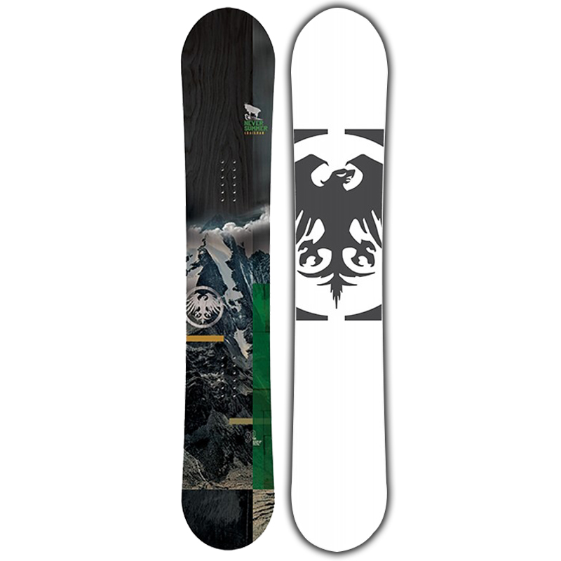
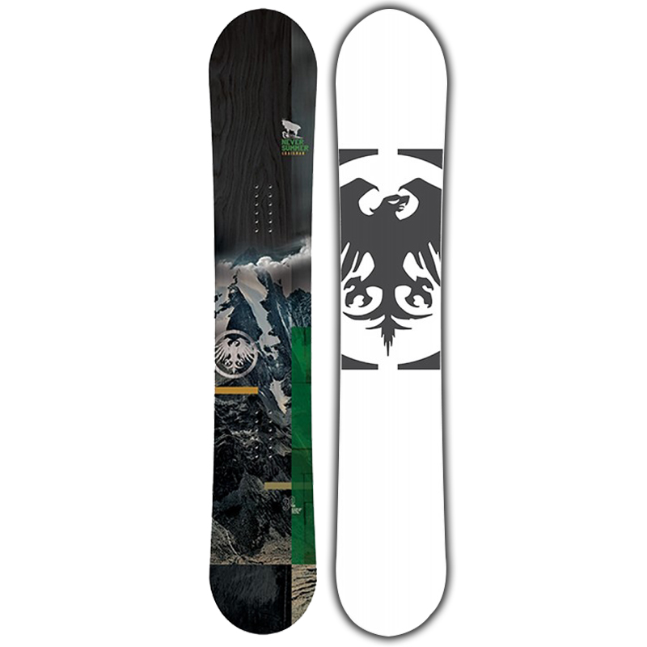

Snow-boardul este placă unde ambele picioare sunt prinse de aceeși placă.
Acestea sunt mai mari decât schiurile având abilitatea de a aluneca pe zăpadă. Lățimea unei plăci variază intre 15 și 30 centimetri.
Aceste plăci sunt diferite de monoski-uri din cauza poziția pe aceasta,
la monoski poziția este in linie cu fața catre direcția de mers iar pe snowboard poziția este paralela cu placa. Aceste plăci sunt folosite in snowboarding.

 
